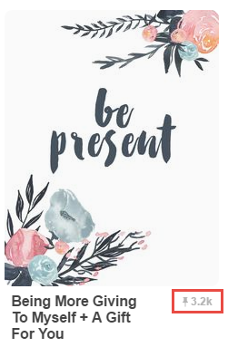

What is quote printable?
A quote printable is nothing but a simple quote written on a beautifully designed canvas using creative fonts which can be printed.
Creatively designed quote printables are in significant demand nowadays, most of the people buy them, take their prints, encase them in a frame and display them on the walls of their offices and homes.
Creative quote printables placed on a wall help in improving the aesthetics as well as keep people motivated throughout the day.
You as someone looking for making money online can leverage this opportunity to make a reliable online income.
I am saying this because designing quote printables is very easy nowadays due to the availability of many free online photo editing tools.
You don’t need to be an expert to use these tools, you can get started within minutes, all you need is some creativity and inspiration.
1. Creative abilities to imagine, think, design and create printables which can be sold online.
2. Ability to promote your printables using social media channels such as Facebook, Instagram, and Twitter and through blogging, guest posting, networking.
The time required entirely depends on your experience and design ideas. If your design concept is ready, you can start creating printables instantly by using free online photo editing tools.
1. Get some inspiration - Before you start thinking about the design of your quote printables, it’s better to get some inspiration and get your ideas flowing.
The best place to get inspiration, in this case, is to visit Pinterest.com.
Pinterest has a huge collection of beautifully designed quote printables. Just visit Pinterest and search for “quotes” or “quote printables,” you’ll see a huge number of printables’ images in front of you.
Now, start observing their designs, fonts, color patterns and so on. I am sure this will give you a lot of ideas about creating your printables.
Another most important thing you need to look at is the number of people who have pinned post/image.
If more people have pinned the images, that means people like the quote and its design.
Note down the image and its design, use it to model your design but remember, never copy.
For example, check the following picture:

You can see in the red box that 3.2k people have pinned this quote printable, it's a guaranteed signal which indicates that people like it.
You can you take inspiration from this and model your designs.
To get even more ideas and inspiration visit the following websites and search for “quotes” or “quote printables”:
2. Decide which tool you are going to use beforehand - To design printables you need to use some tools, as there are many tools available it’s very easy to get confused so I suggest you to select your tool beforehand.
I am listing few tools below; you can decide for yourself which one is right for you.
If you want to get started ASAP without the hassle of installing any software, get started with the following Free web tools:
If you want more editing control, use following software tools:
If you are an expert, then I don’t need to tell you anything :)
3. Collect all the design stuff you need - To create high-quality quote printables you might need beautiful images, fonts, icons, and vectors.
I am listing few websites below which will help you to get everything for free.
Images:
Fonts:
Icons:
Vectors:
4. Get started - At this point you must have at least some idea about your design, selected the tool and collected all the design stuff. Now start your work and create an excellent quote printable.
The best way to monetize is to upload your designs on the following art selling sites:
Lots of people who are interested in buying quote printables visit sites mentioned above.
You can set the price of each printable between $5 to $15.
You’ll earn money when someone likes and buy your printables. More people buy your printables more money you make.